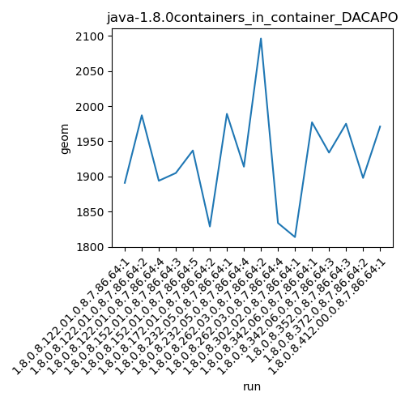
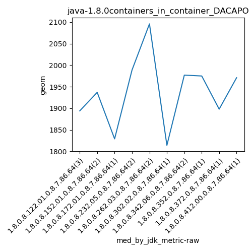
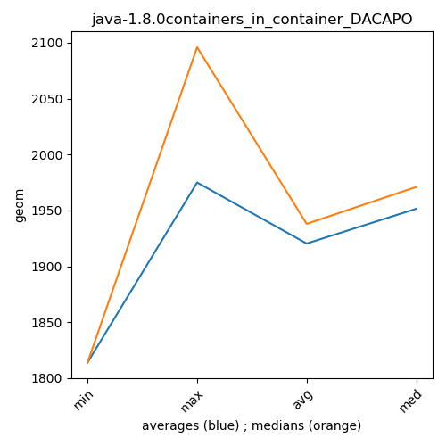

java-1.8.0 DACAPO
Context at bottom
/home/jvanek/git/benchmarks-in-nested-virtualisation-toolchain/final_results/containers_in_container_results/containers_in_container_DACAPO
java-1.8.0
DACAPO
containers_in_container_DACAPO
final score
Expected number of java-1.8.0 JDKs: 7
1st avgmed_alljdks_metric:
/home/jvanek/git/benchmarks-in-nested-virtualisation-toolchain/final_results/result_processing.py /home/jvanek/git/benchmarks-in-nested-virtualisation-toolchain/final_results/containers_in_container_results/containers_in_container_DACAPO geom False
values: [1891, 1987, 1894, 1905, 1937, 1829, 1989, 1914, 2096, 1834, 1814, 1977, 1934]

Expected number of iterations: 5
final number of values: 13 out of 35
Pass rate: 37.1%
values: (1814, 2096, 1923.1538461538462, 1914)

** accuracy from all jdks and runs
more is better
MIN: 1814
MAX: 2096
AVG: 1923.1538461538462
MED: 1914
Relative differences 1:
MIN-MAX: 13.0 %
MIN-AVG: 6.0 %
MIN-MED: 5.0 %
MAX-MIN: -16.0 %
MAX-AVG: -9.0 %
MAX-MED: -10.0 %
AVG-MED: -0.0 %
stored to java-1.8.0.properties. sort | uniq that!
2nd avgmed_by_jdk_metric:
values: [1924.0, 1921.0, 1829.0, 1951.5, 1965.0, 1814.0, 1955.5]

values: [1894, 1937, 1829, 1989, 2096, 1814, 1977]

values: (1814.0, 1965.0, 1908.5714285714287, 1924.0)
values: (1814, 2096, 1933.7142857142858, 1937)

** accuracy from all jdks where runs were avged
more is better
MIN: 1814.0
MAX: 1965.0
AVG: 1908.5714285714287
MED: 1924.0
Relative differences 1:
MIN-MAX: 8.0 %
MIN-AVG: 5.0 %
MIN-MED: 6.0 %
MAX-MIN: -8.0 %
MAX-AVG: -3.0 %
MAX-MED: -2.0 %
AVG-MED: 1.0 %
stored to java-1.8.0.properties. sort | uniq that!
** accuracy from all jdks where runs were medianed
more is better
MIN: 1814
MAX: 2096
AVG: 1933.7142857142858
MED: 1937
Relative differences 1:
MIN-MAX: 13.0 %
MIN-AVG: 6.0 %
MIN-MED: 6.0 %
MAX-MIN: -16.0 %
MAX-AVG: -8.0 %
MAX-MED: -8.0 %
AVG-MED: 0.0 %
stored to java-1.8.0.properties. sort | uniq that!
/home/jvanek/git/benchmarks-in-nested-virtualisation-toolchain/final_results/containers_in_container_results/containers_in_container_SPECJBB
java-1.8.0
DACAPO
/home/jvanek/git/benchmarks-in-nested-virtualisation-toolchain/final_results/containers_in_container_results/containers_in_container_RADARGUNs3
java-1.8.0
DACAPO
/home/jvanek/git/benchmarks-in-nested-virtualisation-toolchain/final_results/containers_in_container_results/containers_in_container_J2DBENCH
java-1.8.0
DACAPO
/home/jvanek/git/benchmarks-in-nested-virtualisation-toolchain/final_results/containers_in_container_results/containers_in_container_RADARGUNs1
java-1.8.0
DACAPO
/home/jvanek/git/benchmarks-in-nested-virtualisation-toolchain/final_results/containers_in_container_results/containers_in_container_JMH
java-1.8.0
DACAPO
pass rates:
containers_in_container_DACAPO=37.1%
Context:
- containers_in_container_results
- DACAPO